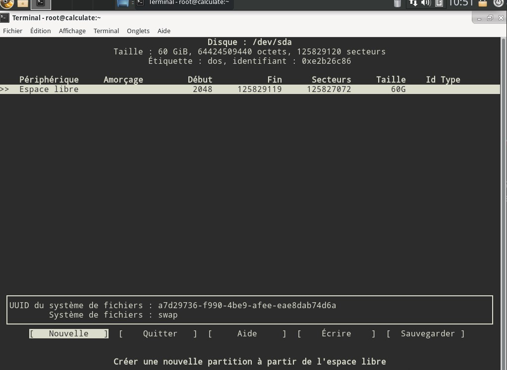

Avant de pouvoir utiliser la distro, il faudra bien évidemment l'installer.
Il va faloir chosir un de sur le site de calculate prenez un DE classique ou une calculate scratch^^.
Petite astuce: téléchargez l'iso sur :miroir.linuxtricks.fr dans les génération périodiques
Téléchargez rufus sur :
Lien de Rufus.Lancez le logiciel et branchez une clé usb de minimum 4Go a votre ordinateur
Configurez le logiciel comme moi en sélectionnant votre clé usb puis cliquez sur démarrer

Partitionement GPT/Uefi Boot
Ne change pas grand chose mais est plus récent
Système de fichier en FAT32:
Plus stable
Vous pouvez utiliser Balena etcher ou DD
De1, démarrez sur le Bios avec la touche indiquée dans le manuel de votre carte mère.
Allez dans les options d'amorcage et désactivez le secure boot.
Enregistrez les modification avec la touche F10
Puis démarrez dans le Boot menu avec la touche du manuel et sélectionnez votre usb.
une fois sur l'installer de calculate choisissez votre langue et démarrez sur le livecd.
Lancez un terminal et tapez cfdisk.
Vous devriez voir cet écran:
Vous devez créer ces partition:
Pour changer le type de la partition swap et efi allez sur la partition et sélectionnez type et cherchez système EFI ou partition d'échange linux
laissez toutes vos partition en primaire
/!\ si vous avez plus de16Go de RAM un swap de 2Go suffit
Lancez un termnal en root
(si vous préférez l'install graphique allez-y)
Tapez cl-install -d (votre partition root ex: /dev/sda1) -d (votre swap):swap -u Votrenomd'utilisateur
Exemple de commande: cl-install -d /dev/sda1 -d /dev/sda2:swap -u woomytuto
Pour changer d'autres parties de l'installation référez vous a cl-install --help
Il va vous demandez un mot de passe, entrez le
Voilà, calculate s'installe, vous pouvez aller prendre un café^^.